Will-I am
插畫 / 塗鴉
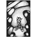
小木偶的眼淚
小木偶呆坐在森林裡，思考著眼淚的形狀；不知從何時起，開心時 他咧嘴大笑；生氣時 他咧嘴大笑；哀傷時 他依舊 咧嘴大笑； 小木偶忘記了悲傷的味道，他呆坐在森林裡 只為了等待，等待淚水的決堤，等待 有一天，他可以找回那遺失已久的 眼淚...
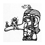
因為未知所以有趣
你永遠不知道天有多高地有多大
唯一能做的就是挺直腰桿兒迎向那未知
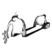
只是，習慣了痛
人 走遠了
心也跟著丟了......................
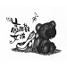
高跟鞋女孩
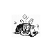
貓 在咖啡杯裡~
貓 在咖啡杯裡，享受心中最後安靜的角落，期待著今天的不愉快，隨著香醇順口的黑咖啡，緩緩入喉，只留下齒頰中的餘香；空氣中彌漫的惱人氣息，就讓它隨風散去，不著痕跡；貓在咖啡杯裡，享受生活，享受自我~
膽小鬼
在陌生的城市中，我偽裝成一隻膽小鬼，躲在自我的王國裡...
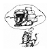
有夢想是幸福的
[寂寞方程式] 影子
孤單的城市，寂寞在心底蔓延，我佇立街角，任由影子拉長身影，月光灑落賦予影生命，與我共舞...
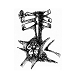
選擇
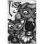
what is L.O.V.E-偽裝
這是一場最高明的偽裝術， 彼此戴著華麗的面具，偽裝自己，武裝自己； 招式之間，各種暗示徵兆試探著彼此的底線， 不讓愛戀的對象看到卸妝後的素顏， 不要另一半看到自己崩潰時的軟弱， 逼迫學習成熟,，努力獨自勇敢； 這是一場孤寂的戰爭，只有受過傷的人才懂， 或許面具下的那顆心，依舊是那份最初的童真， 但偽裝久了，漸漸忘了哪一個才是真實的自己...
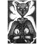
what is L.O.V.E-遊戲
一根狗骨頭引起了她的注意，究竟是什麼樣的著人魔力，能讓他如此地著迷，甘於受控這一切；也許，這只是一場遊戲，一認真 就輸了；但最後受傷的，究竟是她還是他?
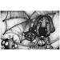
what is L.O.V.E-童話
20歲的我相信童話，30歲的我不知道該相信什麼，至少有那麼一瞬間我是這麼軟弱的自以為...
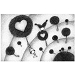
蒲公英
無盡透明的思念如蒲公英的白，占據了滿天片片的白雲，乘著風 帶著滿滿的期盼，輕輕的 飄向遠方的妳；妳在哪裡呢? 是否也和我心有靈犀，思念著心中那虛無飄渺的身影....
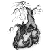
回憶樹
想念的絲如毛線般纏繞，一圈一圈緊缚在回憶樹上，如那混亂的思緒, 理不出頭緒；時間的消逝並未削去那灰色，絕望隨著血液流動，向下扎根，於心深處埋下那冷的種子~
失去 無力 灰色 絕望 冷
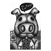
法克~豬
感謝法克豬~因為你無知的善良&直白的情緒，讓我了解人生不如意事十之八九，一聲法克就能讓你氣到長長久久 /法克
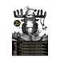
2010 Merry X'mas 明信片 &2011年曆
2010 Merry X'mas 明信片 + 2011年曆
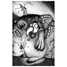
寂寞先生
牠有一雙大大的翅膀和圓滾滾的肚皮，可以飛到世界各地裝下所有人的寂寞；快樂人的寂寞最甘甜帶點微酸，彷彿黃檸檬的顏色般溫醇和睦；憂鬱人的寂寞則帶有苦悶酸澀，猶如烈酒般濃郁嗆人, 卻最能讓牠飽食一餐；牠獨一無二，全世界只有一隻，牠的名字叫寂寞先生...
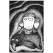
寂寞之後
城市一片漆黑，孤寂大軍吞沒了整個天空，太多的情緒無法消化，太多的想法無人分享，寂寞先生開始累了，感到怕了；牠再也吃不下人類的任何情緒，牠不懂，為什麼人們總是不滿足；一個人的寂寞還能理解，兩個人的距離卻永遠是個謎，一切似乎永無止盡...
{kind=link}
{kind=link}
{kind=link}
{kind=link}
{kind=link}
{kind=link}
{kind=link}
{kind=link}
{kind=link}
{kind=link}
{kind=link}
{kind=link}
{kind=link}
{kind=link}
{kind=link}
{kind=link}
{kind=link}
{kind=link}